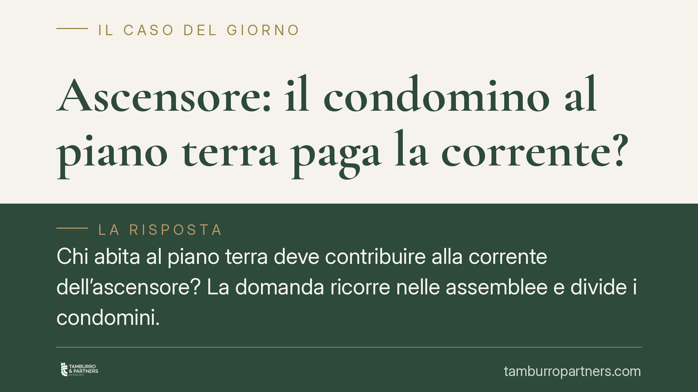

Ascensore: il condomino al piano terra paga la corrente?
Chi abita al piano terra deve contribuire alla corrente dell'ascensore? La domanda ricorre nelle assemblee e divide i condomini. La risposta non è un secco sì o no: dipende dalla distinzione tra installazione, manutenzione e consumo elettrico, e dal concetto di utilità potenziale elaborato dalla Cassazione. Analizziamo il quadro normativo e le conseguenze pratiche per amministratori e condomini.

Il nodo: tre voci di spesa diverse
Parlare di "spese dell'ascensore" come se fossero un blocco unico è la prima fonte di equivoci. In realtà convivono tre voci distinte, con regole di riparto differenti:
- installazione dell'impianto;
- manutenzione e conservazione (ordinaria e straordinaria);
- consumo elettrico di funzionamento.
Tenere separate queste voci è la chiave per capire quando e quanto paga il condomino al piano terra.
Inquadramento normativo
La norma di riferimento per la manutenzione e la ricostruzione delle scale e degli ascensori è l'art. 1124 cod. civ., che prevede un criterio misto: le spese sono ripartite per metà in base ai millesimi di proprietà e per l'altra metà in proporzione all'altezza di ciascun piano dal suolo. In questo schema il condomino del piano terra contribuisce comunque alla quota legata ai millesimi, pur avendo un onere ridotto rispetto a chi abita ai piani alti.
Il principio di fondo resta quello dell'art. 1123, comma 2, cod. civ.: le spese per le cose destinate a servire i condomini in misura diversa si ripartiscono in proporzione all'uso che ciascuno può farne. Secondo l'orientamento della Cassazione, conta l'utilità potenziale, non l'uso effettivo: chi sceglie di non servirsi dell'ascensore non è per questo esonerato, se dell'impianto può oggettivamente avvalersi.
L'utilità potenziale e il piano terra
Il punto decisivo è proprio qui. Il condomino al piano terra viene spesso considerato privo di utilità rispetto all'ascensore. Ma l'esonero non è automatico: occorre verificare se l'impianto gli offra comunque un vantaggio potenziale.
È il caso tipico delle pertinenze: se il condomino del piano terra possiede una cantina, una soffitta o un box ai piani superiori o interrati raggiungibili con l'ascensore, l'utilità potenziale permane e, con essa, l'obbligo di contribuire. L'esonero può ipotizzarsi solo quando manchi qualunque possibilità di fruizione.
Il consumo elettrico: un orientamento non pacifico
Sul riparto della sola corrente elettrica esistono letture diverse. Secondo un orientamento interpretativo, il consumo dovrebbe seguire il criterio dell'art. 1123, comma 2, cod. civ., cioè l'uso che ciascuno può fare del servizio, con possibile alleggerimento o esclusione per chi non ne trae utilità.
Altra parte della giurisprudenza, tuttavia, estende anche ai consumi il criterio misto dell'art. 1124 cod. civ., applicando lo stesso schema previsto per la manutenzione. Si tratta di un contrasto non ancora risolto in termini definitivi: per questo è prudente non dare per scontato che il piano terra sia esonerato dalla quota di energia.
L'ascensore installato dopo
Quando l'ascensore non esiste in origine e viene installato successivamente, si entra nel terreno delle innovazioni disciplinate dagli artt. 1120 e 1121 cod. civ. L'art. 1121 cod. civ. regola in particolare le innovazioni gravose o voluttuarie: i condomini che non intendono trarne vantaggio sono esonerati da ogni contributo alla spesa di installazione, fermo restando il loro diritto di partecipare in seguito ai benefici dell'opera versando la quota di spettanza.
Anche in questo scenario resta ferma la distinzione tra la spesa di installazione (regolata dalle norme sulle innovazioni) e le successive spese di gestione e consumo, cui si applicano i criteri ordinari.
Implicazioni pratiche
Per l'amministratore la lezione è operativa: predisporre un riparto che tenga separate le tre voci, documentando i presupposti dell'eventuale esonero. Un riparto indifferenziato espone a contestazioni e all'impugnazione della delibera.
Per il condomino al piano terra l'aspettativa di un esonero totale va ridimensionata: la verifica va fatta caso per caso, considerando pertinenze e utilità potenziale, e tenendo presente il contrasto giurisprudenziale sui consumi.
In entrambe le prospettive, pesa il regolamento condominiale: se di natura contrattuale, può prevedere criteri di riparto derogatori rispetto al codice, con effetti vincolanti.
Cosa fare in concreto
- Verificare il regolamento condominiale e accertare se contiene clausole sul riparto delle spese dell'ascensore e sulla loro natura contrattuale.
- Distinguere le tre voci di spesa (installazione, manutenzione, consumo) nel rendiconto e nel piano di riparto.
- Accertare l'utilità potenziale del singolo condomino, tenendo conto di cantine, soffitte e box raggiungibili con l'impianto.
- Esaminare il verbale assembleare che ha approvato il criterio di riparto, verificandone quorum e motivazione.
- Una verifica documentale del riparto adottato è opportuna prima di avviare contestazioni formali.
Ogni condominio ha una storia a sé.
Se gestisci un'amministrazione e vuoi un confronto su una specifica questione condominiale, scrivi allo studio. Ti rispondiamo entro un giorno lavorativo.